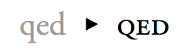

字体漫谈
顾轶灵
准备工作
- 字符 - Character
- 字形 - Glyph
- 字型 - Font
- 字体 - Typeface
字符 - Character
字母、数字、汉字、符号等，是一种抽象实体。
字形 - Glyph
单个「字符」的具体表达，一个字可有多个不同的字形。
原则上 Unicode 中只对字，而非字形编码。
字型 - Font
印刷行业中，指某一整套具有同样样式和尺码的字形，如一整套中易宋体 5 号字、一整套 9 磅 Helvetica 粗体字。
字体 - Typeface
若干个「字型」在若干个尺寸上的集合。
随着计算机字体 (computer font) 的普及，可缩放的矢量字体的出现使得「字型」与「字体」的界限逐渐模糊，现今这两个概念在数字排印领域越来越多地被当做同义词使用。
「书体」- 宋体、仿宋体、黑体等…
例如 Windows 自带的「宋体」实为「中易宋体」。
字体分类
- 按有无衬线
- 按显示类型
- 按数据格式 (计算机字体)
按有无衬线
- 衬线字体 (serif)
- 无衬线字体 (sans serif)
| 无衬线字体 |  |
|---|---|
| 衬线字体 |  |
| 衬线 |
按显示类型
- 比例字体 (proportional) - 适合普通文本
- 等宽字体 (monospace) - 适合代码、ASCII art

HTML 中的 <pre>、<code> 标签常使用等宽字体。
按数据格式
- 点阵字体 (bitmap / raster)
- 轮廓字体 (outline)
- 笔画字体 (stroke)
点阵字体
本质上是点阵图片的集合。
- 渲染极快
- 显示效果稳定
- 容易创建
- 在小字号、多笔画时渲染效果较好
- 视觉效果较差
- 不适合缩放
轮廓字体
是向量图的集合，用 Bézier 曲线描述字形，适合缩放。
- PostScript 字体
- TrueType 字体
- OpenType 字体
PostScript 字体
(PostScript 轮廓)
- Adobe 开发
- 用三次 Bézier 曲线描述字形。
- 私有 hinting，价格昂贵
- 质量高，适合打印专业质量的印刷出版物
- 又细分为 Type1 / Type3 / CID 等类型
TrueType 字体
(TrueType 轮廓)
- Apple 为对抗 Adobe 的 Type1 与 Microsoft 共同开发
- 用二次 Bézier 曲线描述字形，渲染较快
- 可内置点阵字体
- 在 Mac OS X 和 Windows 中是最常见的字体格式
OpenType 字体
- 源于 Microsoft 独自开发的 TrueType Open
- 后 Adobe 加入开发，增加对 PostScript 轮廓的支持
- PostScript flavor / TrueType flavor
CSS Fonts
CSS 2.1
- font-family
- font-style
- font-variant
- font-weight
- font-size
- font
字体匹配算法
CSS 2.1 Font matching algorithm
- UA 创建(或访问)一个 CSS 2.1 相关属性的字体数据库；
- 对每个元素的每个字符，先尝试匹配第一个 font-family 名字；
- 找到则尝试匹配剩余属性 (font-style, font-variant, …)；
- 如果 (1) 没有完全匹配的字体，或 (2) 字体匹配但相应字形缺失，则尝试匹配下一个 font-family；
- 如果 font-family 无法匹配，UA 分配默认字体；
- 如果该字符在 UA 选择的所有字体下均无字形，UA 应选择某个字体中的「missing character」的字形，例如「�」。
font-family
font-family: 宋体;
「宋体」定义在何处？
name - Naming Table
按 OpenType 规范，字体的名称信息存在 name 表中。
-
Name Records
- Platform ID
- Platform-specific encoding ID
- Language ID
- Name ID
- …
Name IDs
(部分)
| ID | 含义 |
|---|---|
| 1 | Font Family name (Family) |
| 2 | Font Subfamily name (Style) |
| 4 | Full font name (Full) |
| 6 | PostScript name |
| 16 | Preferred Family |
| 17 | Preferred Subfamily |
| 18 | Compatible Full (Mac only) |
| 21 | WWS Family Name |
| 22 | WWS Subfamily Name |
| … | |
Name IDs
| Name Type | Chinese - PRC | English - United States |
|---|---|---|
| Family | 宋体 | SimSun |
| Style | Regular | Regular |
| Full | 宋体 | SimSun |
| PostScript name | 宋体 | SimSun |
Name IDs
| Name Type | Chinese - PRC | English - United States |
|---|---|---|
| Family | Adobe 黑体 Std R | Adobe Heiti Std R |
| Style | Regular | Regular |
| Full | AdobeHeitiStd-Regular | |
| Preferred Family | Adobe 黑体 Std | Adobe Heiti Std |
| Preferred Subfamily | R | R |
| PostScript name | AdobeHeitiStd-Regular | AdobeHeitiStd-Regular |
用哪个？
Undefined!
自造字体测试结果
| 中文 | 英文 | |||||
|---|---|---|---|---|---|---|
| Family | Pref. Family | Full | Family | Pref. Family | Full | |
| IE 6~8 | ✓ | ✓ | ✓ | |||
| IE 9, IE 10 PP2 | ✓ | ✓ | * | |||
| Firefox 3.6 | ✓ | ✓ | ✓ | |||
| Firefox 4 + | ✓ | ✓ | ||||
| :( | ✓ | :( | ||||
| Chrome 18 | ✓ | ✓ | * | |||
| Safari 5 Win | ✓ | ✓ | ✓ | |||
| Opera 11 | ✓ | :( | ||||
Firefox 4+ 下字体只要有 Preferred Family，就无法通过 Family 匹配。
* 从「SimSun」来看应该是可以通过英文 Family 匹配的，这里的原因尚不明。
Generic font families
body {
font-family: Helvetica, Arial, sans-serif;
}- serif
- sans-serif
- cursive (script)
- fantasy (decorative)
- monospace
影响默认值、fallback 值因素：OS 相关机制、浏览器配置、charset、lang 属性、font-family 中之前项的值…可参考玉伯的实验。
相关机制
Windows
Linux
相关机制
WebKit
WebKit settings 中可设定各个 generic family 的默认值
Firefox
访问 about:config 后筛选出的 font 相关项中包含不同语言下 generic families 的默认值。
Opera
opera:config#CSSGenericFontFamily
font-style
normal | italic | oblique | inherit
「italic」为单独设计的斜体字体，而「oblique」则由普通字体变形而成。
font-variant
normal | small-caps | inherit
允许使用同字体的大写字母缩小而成(甚至不缩小亦被允许)。
font-weight
(never fail)
normal | bold | bolder | lighter | 100 | 200 | 300 | 400 | 500 | 600 | 700 | 800 | 900 | inherit
- normal = 400, bold = 700
- Book / Regular / Roman / Normal / Medium → normal
- 由一系列启发式规则来指导映射
- 一般处理为 <700 均为「Regular」，≥700 为「Bold」
Myriad Pro Regular / Semibold / Bold
| 100 | 200 | 300 | 400 | 500 | 600 | 700 | 800 | 900 | |
|---|---|---|---|---|---|---|---|---|---|
| IE 6 | Regular | Bold | |||||||
| IE 7-9, 10 PP2 | Regular | Semibold | Bold | ||||||
| Firefox 3.6 | Regular | Bold | |||||||
| Firefox 4 + | Regular | Semibold | Bold | ||||||
| Chrome 18 | Regular | Bold | |||||||
| Opera 11 | Regular | Bold | |||||||
| Safari 5 Win | Regular | Bold | |||||||
font-size
(never fail)
<absolute-size> | <relative-size> | <length> | <percentage> | inherit
-
absolute-size
xx-small | x-small | small | medium | large | x-large | xx-large
-
relative-size
一个例子
body {
font-family: Tahoma, sans-serif;
font-style: italic;
font-weight: bold;
}(系统中已安装 Tahoma Regular 和 Tahoma Bold)
实际匹配过程 (WebKit)：
找到所有 Family 为「Tahoma」的字体
→ 候选字体做一定过滤需后按设定的条件排序
→ 选出排序最高的 Tahoma Bold
→ 渲染前检查出需要 italic 于是拟合为 oblique 样式
未定义内容
- font-family 是否支持 localized names？
- font-family 是否支持 Preferred Family？
- font-style / font-weight / font-variation 不满足时是否需要拟合？
- font-family 匹配失败 fallback 时默认字体的选择是否有讲究？
- …
讨论
font-family 没有设定中文字体时，汉字应该怎么显示？
p {
font-family: Helvetica;
}p {
font-family: Helvetica, serif;
}现实 (悲惨世界)
Win 7
IE 8 +
UTF-8 页面，默认 serif 字体会错误地优先使用朝鲜文字体「Batang」。
GBK 页面除了前面这个问题外，默认 sans-serif 还会优先使用朝鲜文字体「Gulim」。
<meta http-equiv="X-UA-Compatible" content="IE=EmulateIE7"> 可缓解
Win 7 下其他浏览器的 serif / sans-serif 汉字默认最终都会落到到「宋体」。
Mac OS X
Safari 5
- 默认 serif 为「Times」，汉字会使用「华文宋体」(STSong)；
默认 sans-serif 为「Helvetica」，汉字会 使用「华文黑体」(STHeiti)。 - 所有 family 都缺字时 WebKit 中汉字按首字体来选择 system fallback 字体：
其中的汉字均会 fallback 为「华文黑体」。p.foo { font-family: Helvetica, Times; } p.bar { font-family: Helvetica, serif; }
Mac OS X
Chrome 18
- 默认 serif 为「华文宋体」；默认 sans-serif 为「华文黑体」。
- 没有 generic family 时，与 Safari 相同即按首字体 fallback。
- 有 generic family 时，因为默认 serif 和 sans-serif 都包含汉字，故不需要再按首字体来 fallback：
其中的汉字字体会根据 serif 选择为「华文宋体」。p { font-family: Helvetica, serif; }
Mac OS X
Firefox 11
- 默认 serif 为「华文宋体」；默认 sans-serif 为「华文黑体」。
- 没有 generic family 时，汉字总是通过 system fallback 选择「华文黑体」。
- 有 generic family 时，按配置项选择对应字体 (默认配置中 serif 和 sans-serif 字体均含汉字)
其中前两条的汉字字体都会 fallback 为「华文黑体」，第三条为默认 serif「华文宋体」。p.alpha { font-family: Times, Helvetica; } p.beta { font-family: Helvetica, Times; } p.gamma { font-family: Helvetica, serif; }
Mac 下这几个浏览器具体表现可参考此图
{kind=link}
More…
- Opera 对包含 localized family 的字体无法识别英文名字如「SimSun」
- Opera 在 Windows 下无视 FontSubstitutes
- Mac OS 下的 WebKit 不识别 localized family 如「宋体」
- …
没有银弹
建议
- 尽量使用 UTF-8 编码
- 尽量指定 lang 为 zh-CN
- 尽量指定 generic family
-
默认 font-family 推荐「Arial, sans-serif;」
在 Windows 下，sans-serif 会默认采用「宋体」；Mac 下的「华文黑体」本就是通用选择。「Arial」换为「Tahoma」、「Verdana」等均可，可视设计而定。(可能引起文本对齐问题)
实在需要使用 GB2312/GBK 时，推荐去掉「sans-serif」，否则 Win 7 IE8+ 会错误使用「Gulim」。(亦可为 IE 写单独的 font-family) - family name 中的汉字的 Unicode 编码
建议
-
尽量显式声明，避免让浏览器/操作系统选择字体
西文字体在中文前、将平台独有的字体在通用字体前、generic family 列最后。'Lucida Grande', Verdana, STHeiti, 'Microsoft Yahei', sans-serif; -
特殊 family name 两边加引号
包含空格符、数字、除 '-' 外的特殊字符时建议加，但非必须。 -
family name 名称统一
大小写建议统一，也尽量避免「宋体」、「SimSun」混用，有利于 gzip。 - 中文 font-size 至少 12px
鉴赏
google.com / google.com.hk (首页、搜索结果)
- arial,sans-serif
- Arial,sans-serif
baidu.com (首页、搜索结果)
- arial
- "宋体"
- Arial,宋体
- Simsun
鉴赏
taobao.com (首页)
- tahoma,arial,宋体
- courier new,courier,monospace
- 'simsun'
- arial,verdana
- verdana,arial
- arial
- verdana
- Tahoma
- 'Verdana',"????????"
鉴赏
qq.com (首页)
- "宋体","Arial Narrow",HELVETICA
- "宋体","Arial Narrow"
- tahoma
- Verdana
- 宋体,STSong
- tahoma,宋体
- Tahoma
What's next?
CSS 3 Fonts
- font-family
- font-weight
- font-stretch
- font-style
- font-variant
- font-size
- font-size-adjust
- font
- font-synthesis
- @font-face
- font features
除 font-synthesis 和 font features 外的新内容都是从 CSS 2 删除的内容
font-family
- 明确了「family name 只能匹配一组字体，而非指定某个特定字体」
- 明确了「必须可以通过本地化名称匹配字体」
- 附录中描述了对于 OpenType 和 TrueType 可以用作 font-family 匹配的字体名称：Family (ID 1), Preferred Family (ID 16), WWS Family (ID 21)
- 尚不完整
font-weight
增加了一个字重数值-样式名的对照表供参考：
- 100 - Thin
- 200 - Extra Light (Ultra Light)
- 300 - Light
- 400 - Normal
- 500 - Medium
- 600 - Semi Bold (Demi Bold)
- 700 - Bold
- 800 - Extra Bold (Ultra Bold)
- 900 - Black (Heavy)
font-stretch
normal | ultra-condensed | extra-condensed | condensed | semi-condensed | semi-expanded | expanded | extra-expanded | ultra-expanded | inherit
用来选择字体的伸缩程度
font-size-adjust
<number> | none | inherit
aspect value：字体的 x-height 与 font-size 的比例
字体发生 fallback 以后，aspect value 可能会不一致，这个属性用来调整 font-size 使得不同字体的 x-height 保持一致，取值为需要的 aspect value 值。效果参见示意图。
{kind=link}
font-synthesis
none | [ weight || style ]
默认 weight style
- 显式地控制是否允许浏览器拟合字重和样式
@font-face
@font-face {
descriptor: value;
descriptor: value;
…
}descriptor 与 CSS 属性不同，用来「描述」Web font 而非「选择」。
@font-face
- font-family
- src
- font-style
- font-weight
- font-stretch
- unicode-range
- font-variant *
- font-feature-settings *
* 这里添加的规则将影响字体的渲染结果，但不影响字体选择。
src descriptor
是一系列字体资源的列表，优先使用 UA 能够使用的第一个资源，每个资源项后的文件类型描述可选。
src: url(fonts/simple.ttf);
src: url(basic.woff) format("woff"),
url(fonts/basic.ttf) format("opentype");
truetype 和 opentype 同义
src (descriptor)
读取本地字体
src: local(Baidu), // try local font first
url(baidu.ttf) format("opentype");
对于 OpenType 和 TrueType 字体，仅匹配 PostScript name (ID 6) 或 full font name (ID 4)，且不支持 localized 名称。
unicode-range
@font-face {
font-family: BBCBengali;
src: url(fonts/BBCBengali.ttf) format("opentype");
unicode-range: U+00-FF, U+980-9FF;
}@font-face
已被主流浏览器支持
IE 9 以前仅支持 EOT 字体，浏览器兼容性可参考这里。
中文环境下的应用场景？
font features
更好地利用字体的的原生功能，提供更丰富的样式
font-variant-position
下标 vs. 拟合下标
font-variant-position
合字

中文也有「合字」
font-variant-caps

小型大写字
font-variant-numeric
数字样式
字体匹配算法
- 增加了 font-stretch 匹配
- font-style 匹配过程补完
- small-caps 不再放在字体匹配过程中处理，而加入到 font features
- Unicode variation selector 匹配成为必须